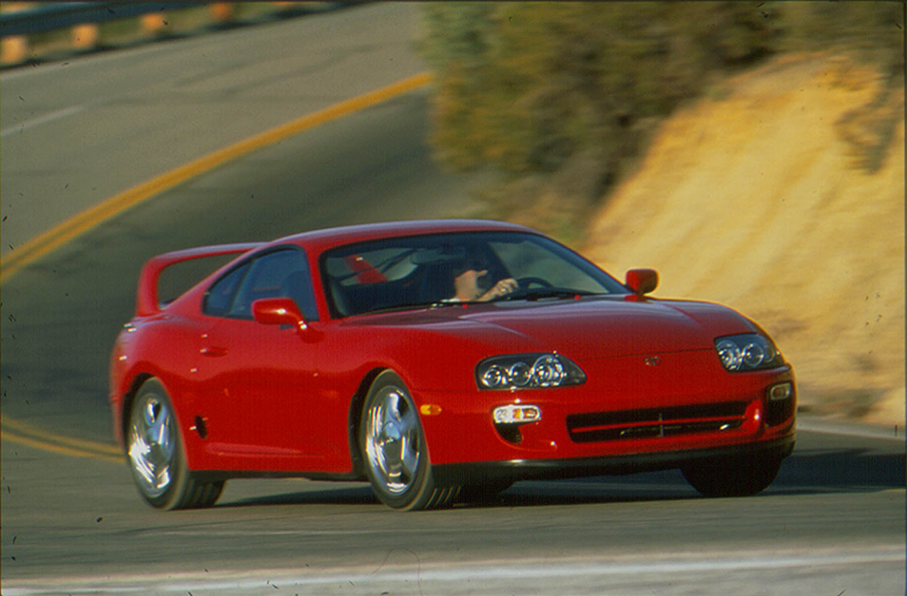
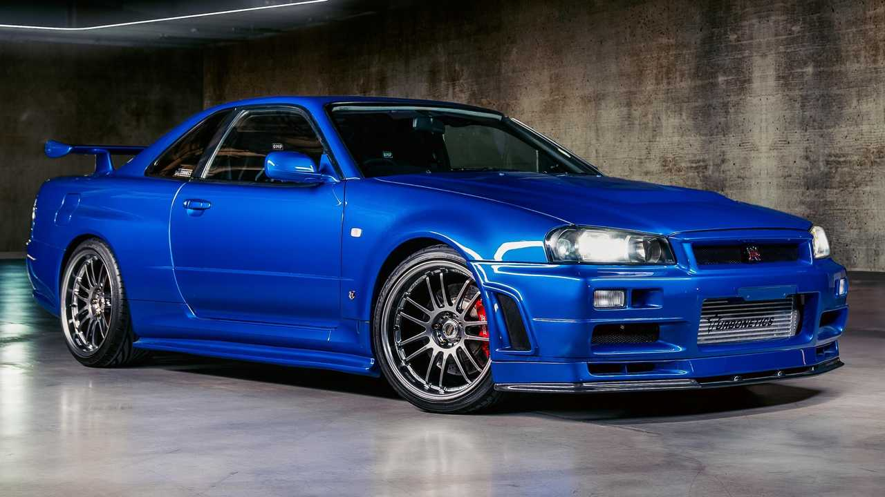
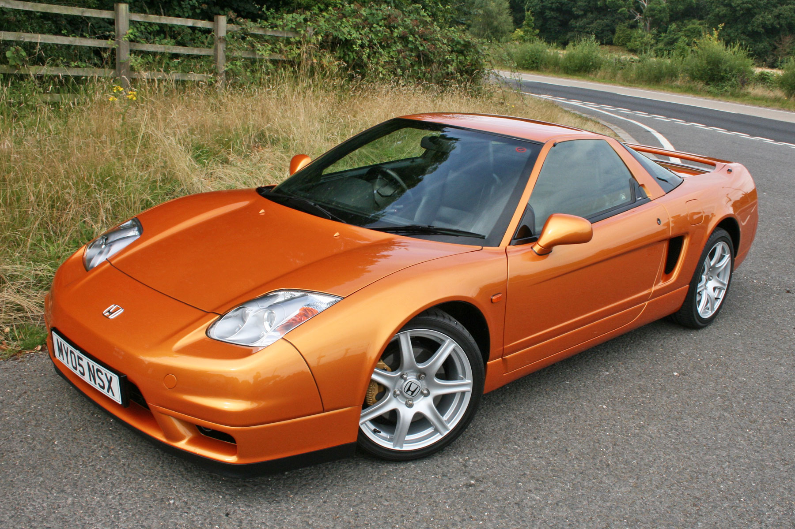

Toyota Supra from the 1990s, particularly the fourth generation (1993-2002), is a legendary sports car renowned for its sleek design, impressive performance, and robust engineering. Powered by the iconic 2JZ inline-six engine, it produced notable horsepower figures, especially in the later Turbo models. Its rear-wheel-drive layout, along with advanced features for its time like electronic fuel injection and a twin-turbo option, contributed to its status as a high-performance icon. The Supra became famous in the tuning and racing communities, often modified for even greater power and speed. Its popularity continues to endure among car enthusiasts worldwide, making it a symbol of Japanese sports car excellence from the era.

The Nissan GT-R R34, produced from 1999 to 2002, is an iconic sports car known for its powerful RB26DETT twin-turbo engine, delivering around 320 horsepower. It featured advanced technology like ATTESA E-TS all-wheel drive and Super-HICAS four-wheel steering, enhancing its handling and agility. Famous for its role in motorsports and pop culture, the GT-R R34 remains a revered symbol of Japanese automotive engineering and performance.

The 2005 Acura NSX is a high-performance sports car renowned for its mid-engine layout, powered by a 3.2-liter V6 engine producing approximately 290 horsepower. It features lightweight aluminum construction, precise handling, and a distinctive design. The NSX is celebrated for its balance of performance and everyday usability, cementing its legacy as a timeless Japanese sports car icon.
Hello im Eli Zigdon, 28 years old from hadera.
and i love cars